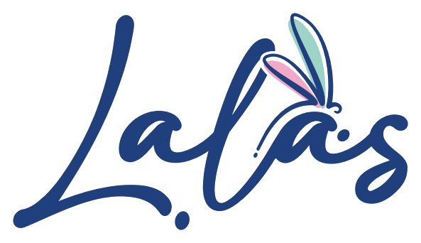

Opciones de sitio para Lalas
Dos propuestas one-page para presentar la marca, su posicionamiento y la línea de productos con un lenguaje claro, comercial y alineado a la identidad visual.

Dos propuestas one-page para presentar la marca, su posicionamiento y la línea de productos con un lenguaje claro, comercial y alineado a la identidad visual.